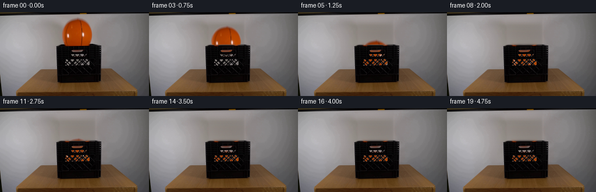
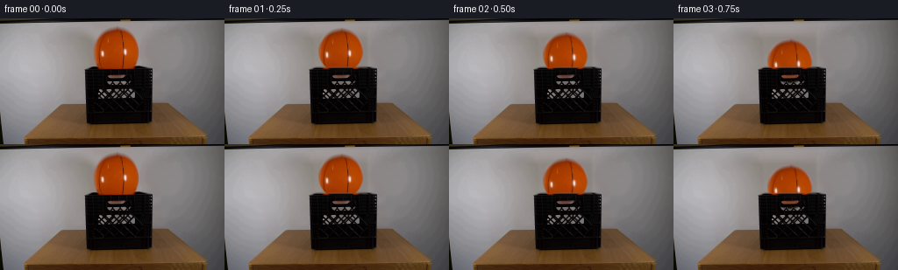

CODING AGENTS AS PIXEL WORLD MODELS
traex/GPT-5.6-Sol · 0014
点击播放 · 原生 RGB 像素
逐轮保存的候选
回放视频、检查图与代码变化。
每份候选均可单独播放。实际图片检查记录在下方工具轨迹中。
候选 01播放与检查图
点击播放 · 原生 RGB 像素


展开代码变化
--- 上一保存版本
+++ 本次保存版本
@@ -0,0 +1,150 @@
+from pathlib import Path
+import numpy as np
+import cv2
+from PIL import Image
+import artifact_io
+
+# A small, deterministic 2-D photographic composite. The ball texture comes
+# directly from frame zero; only geometric resampling and analytic dynamics are
+# used.
+HERE = Path(__file__).resolve().parent
+first = np.asarray(Image.open(HERE / "first_frame.png").convert("RGB"), dtype=np.uint8)
+H, W = first.shape[:2]
+
+
+def make_clean_plate(im):
+ """Remove the ball to expose the stationary wall and the crate below it."""
+ bgr = cv2.cvtColor(im, cv2.COLOR_RGB2BGR)
+ yy, xx = np.mgrid[:H, :W]
+ # Include the dark outline and the very soft contact/shadow fringe.
+ mask = (((xx - 132.0) / 27.0) ** 2 + ((yy - 34.5) / 27.0) ** 2 < 1.0).astype(np.uint8) * 255
+ plate = cv2.cvtColor(cv2.inpaint(bgr, mask, 5, cv2.INPAINT_TELEA), cv2.COLOR_BGR2RGB).astype(np.float32)
+
+ # On the plain wall a row-wise fit is cleaner and more photographic than a
+ # large featureless inpaint. Fit only uncontaminated wall on both sides.
+ rng = np.random.default_rng(1414)
+ for y in range(5, 57):
+ xs = np.r_[np.arange(70, 101), np.arange(164, 195)]
+ for c in range(3):
+ coef = np.polyfit(xs, im[y, xs, c].astype(np.float32), 2)
+ vals = np.polyval(coef, np.arange(102, 164))
+ # Preserve the fine fixed sensor/wall texture at a very low level.
+ vals += rng.normal(0.0, 0.75, vals.shape)
+ plate[y, 102:164, c] = vals
+
+ # Feather the fitted patch into its untouched surroundings.
+ feather = np.zeros((H, W), np.float32)
+ feather[5:57, 102:164] = 1.0
+ feather = cv2.GaussianBlur(feather, (0, 0), 2.0)[..., None]
+ # Reconstruct the fitted candidate once more so only the intended area is blended.
+ fitted = plate.copy()
+ plate = fitted * feather + cv2.cvtColor(cv2.inpaint(bgr, mask, 5, cv2.INPAINT_TELEA), cv2.COLOR_BGR2RGB) * (1 - feather)
+ return np.clip(plate, 0, 255).astype(np.uint8)
+
+
+plate = make_clean_plate(first)
+
+# Original basketball as a premultiplied RGBA sprite. The circular matte keeps
+# the real black channels, pebbled highlights, and edge shading intact.
+CX0, CY0 = 132.0, 34.5
+x0, y0, size = 101, 3, 63
+sprite_rgb = first[y0:y0 + size, x0:x0 + size].astype(np.float32)
+syy, sxx = np.mgrid[:size, :size]
+sx0, sy0 = CX0 - x0, CY0 - y0
+rad = np.sqrt((sxx - sx0) ** 2 + (syy - sy0) ** 2)
+sprite_a = np.clip(26.0 - rad, 0.0, 1.0).astype(np.float32)
+sprite_pm = sprite_rgb * sprite_a[..., None]
+
+# Matte for the front of the crate. Dark plastic is foreground; the lighter
+# rectangular openings remain transparent, so the ball can actually be seen
+# through the crate's ventilation/handle slots while falling inside.
+luma = plate.astype(np.float32).mean(axis=2)
+crate_a = np.zeros((H, W), np.float32)
+roi = np.clip((108.0 - luma) / 35.0, 0.0, 1.0)
+for y in range(55, 123):
+ # Slight taper follows the photographed crate side walls.
+ left = int(round(96.5 + max(0, y - 58) * 0.025))
+ right = int(round(174.0 - max(0, y - 58) * 0.010))
+ crate_a[y, left:right + 1] = roi[y, left:right + 1]
+# Keep anti-aliased plastic edges, without bleeding the matte into openings.
+crate_a = cv2.GaussianBlur(crate_a, (3, 3), 0.45)
+crate_a = np.clip(crate_a, 0, 1)
+
+
+def state_at(t):
+ """Gravity and successively damped impacts against the crate bottom."""
+ y, v = CY0, 0.0
+ g = 48.0 # image pixels / second^2
+ floor = 95.0 # ball-centre height at crate bottom
+ impacts = 0
+ last_impact = -10.0
+ dt = 0.001
+ elapsed = 0.0
+ while elapsed < t - 1e-12:
+ h = min(dt, t - elapsed)
+ v += g * h
+ y += v * h
+ elapsed += h
+ if y >= floor and v > 0:
+ # Reflect the tiny overshoot to avoid numerical sticking.
+ y = floor - (y - floor)
+ restitution = (0.58, 0.32, 0.14)[min(impacts, 2)]
+ v = -v * restitution
+ impacts += 1
+ last_impact = elapsed
+ if impacts >= 3 or abs(v) < 4.0:
+ y, v = floor, 0.0
+ break
+ # A modest, area-preserving squash only at contact. It is mostly seen
+ # through the holes in the crate and prevents a rigid cutout appearance.
+ contact = np.exp(-((floor - y) / 3.3) ** 2)
+ squash_y = 1.0 - 0.105 * contact
+ if v < -18 and elapsed - last_impact < 0.16:
+ squash_y += 0.035
+ squash_x = 1.0 / np.sqrt(squash_y)
+ return y, v, squash_x, squash_y, impacts
+
+
+def ball_layer(cx, cy, angle_deg, scale_x=1.0, scale_y=1.0):
+ """Resample the premultiplied sprite to a full-frame layer."""
+ # OpenCV affine maps source to destination. Rotation is deliberately very
+ # slight, appropriate for a vertically released ball.
+ th = np.deg2rad(angle_deg)
+ ct, st = np.cos(th), np.sin(th)
+ A = np.array([[scale_x * ct, -scale_y * st],
+ [scale_x * st, scale_y * ct]], np.float32)
+ src_c = np.array([sx0, sy0], np.float32)
+ dst_c = np.array([cx, cy], np.float32)
+ M = np.zeros((2, 3), np.float32)
+ M[:, :2] = A
+ M[:, 2] = dst_c - A @ src_c
+ pm = cv2.warpAffine(sprite_pm, M, (W, H), flags=cv2.INTER_LINEAR,
+ borderMode=cv2.BORDER_CONSTANT, borderValue=0)
+ aa = cv2.warpAffine(sprite_a, M, (W, H), flags=cv2.INTER_LINEAR,
+ borderMode=cv2.BORDER_CONSTANT, borderValue=0)
+ return pm, aa
+
+
+def render_at(t):
+ cy, vel, scx, scy, impacts = state_at(max(0.0, t))
+ # A barely perceptible natural spin, reversing some angular velocity after
+ # the first basket-bottom impact.
+ angle = 2.1 * min(t, 1.60) + (0.65 if impacts else 2.1) * max(0.0, t - 1.60)
+ pm, aa = ball_layer(CX0, cy, angle, scx, scy)
+ out = plate.astype(np.float32) * (1.0 - aa[..., None]) + pm
+ # Restore the photographed front plastic over the ball. Holes remain open.
+ ca = crate_a[..., None]
+ out = out * (1.0 - ca) + plate.astype(np.float32) * ca
+ return out
+
+
+frames = np.empty((20, H, W, 3), dtype=np.uint8)
+frames[0] = first # contract: frame zero is byte-for-byte the supplied image
+for i in range(1, 20):
+ t = i / 4.0
+ # Short 1/25 s exposure: enough motion integration for a photographic fall,
+ # without obscuring the scientific demonstration at this low frame rate.
+ samples = [render_at(max(0.0, t + q)) for q in (-0.020, -0.010, 0.0, 0.010, 0.020)]
+ frames[i] = np.clip(np.mean(samples, axis=0) + 0.5, 0, 255).astype(np.uint8)
+
+artifact_io.save(frames, HERE)
可观测工具轨迹
实际执行的命令与返回图片。
命令 1exit 0
/bin/bash -lc "cat prompt.txt && printf '\\n---RULES---\\n' && cat GENERATION_RULES.md"
命令 2exit 127
/bin/bash -lc "find . -maxdepth 2 -type f -printf '%p\\n' | sort && file first_frame.png"
命令 3exit 0
/bin/bash -lc "python - <<'PY'
from PIL import Image
import numpy as np
im=np.asarray(Image.open('first_frame.png').convert('RGB'))
print(im.shape, im.dtype, im.min(), im.max())
# colors via kmeans cv2
import cv2
z=im.reshape(-1,3).astype(np.float32)
crit=(cv2.TERM_CRITERIA_EPS+cv2.TERM_CRITERIA_MAX_ITER,50,0.2)
_,lab,cen=cv2.kmeans(z,12,None,crit,10,cv2.KMEANS_PP_CENTERS)
counts=np.bincount(lab[:,0],minlength=12)
for n,c in sorted(zip(counts,cen),reverse=True): print(n, np.round(c).astype(int))
# region stats grids mean RGB 16 x 9
for gy in range(9):
print(' '.join('%02x%02x%02x'%tuple(im[gy*16:(gy+1)*16,gx*16:(gx+1)*16].mean((0,1)).astype(int)) for gx in range(16)))
PY"命令 4exit 0
/bin/bash -lc "python - <<'PY'
import cv2, numpy as np
im=cv2.imread('first_frame.png'); hsv=cv2.cvtColor(im,cv2.COLOR_BGR2HSV)
# orange hue BGR h likely
for lo,hi,s,v in [(0,30,80,30),(0,20,100,50),(5,25,60,40)]:
m=cv2.inRange(hsv,(lo,s,v),(hi,255,255)); n,L,st,c=cv2.connectedComponentsWithStats(m)
print('\\n',lo,hi,s,v)
for x,y,w,h,a in st[1:]:
if a>10: print(x,y,w,h,a)
# edges horizontal distributions
ed=cv2.Canny(im,70,150)
print('edge rows', sorted(enumerate(np.sum(ed>0,axis=1)), key=lambda x:x[1], reverse=True)[:20])
print('edge cols', sorted(enumerate(np.sum(ed>0,axis=0)), key=lambda x:x[1], reverse=True)[:20])
PY"命令 5exit 0
/bin/bash -lc "python - <<'PY'
from PIL import Image
import numpy as np
im=np.array(Image.open('first_frame.png'))
Y=im.mean(2)
for y in range(45,126,3):
print(f'{y:3}:',end=' ')
for t in [35,55,75]:
z=np.where(Y[y]<t)[0]; runs=[]
if len(z):
a=p=z[0]
for q in z[1:]:
if q>p+1:
if p-a>=2:runs.append((a,p))
a=q
p=q
if p-a>=2:runs.append((a,p))
print(t,runs,end='; ')
print()
# Samples RGB per selected rows 90-180 every 5 x
for y in [55,58,60,64,68,72,80,90,98,105,115,120,125]:
print('\\ny',y)
for x in range(90,181,5): print(x,tuple(im[y,x]),end=' ')
PY"命令 6exit 0
/bin/bash -lc "python - <<'PY'
from PIL import Image
import numpy as np
im=np.array(Image.open('first_frame.png'))
Y=im.mean(2)
chars=' .:-=+*#%@'
for y in range(52,123,2):
print(f'{y:03d} ',end='')
for x in range(92,180,2):
v=Y[y:y+2,x:x+2].mean(); print(chars[min(9,int(v/256*10))],end='')
print()
PY"命令 7exit 0
/bin/bash -lc "python - <<'PY'
from PIL import Image
import numpy as np
im=np.array(Image.open('first_frame.png'))
# orange criterion R>1.5G and R>80
m=(im[:,:,0]>80)&(im[:,:,0]>1.5*im[:,:,1])&(im[:,:,1]<110)
for y in range(5,64):
x=np.where(m[y])[0]
x=x[(x>90)&(x<180)]
if len(x): print(y,x.min(),x.max(),len(x))
PY"命令 8exit 0
/bin/bash -lc 'cat artifact_io.py'
命令 9exit 0
/bin/bash -lc "cat > generate.py <<'PY'
from pathlib import Path
import numpy as np
import cv2
from PIL import Image
import artifact_io
# A small, deterministic 2-D photographic composite. The ball texture comes
# directly from frame zero; only geometric resampling and analytic dynamics are
# used.
HERE = Path(__file__).resolve().parent
first = np.asarray(Image.open(HERE / \"first_frame.png\").convert(\"RGB\"), dtype=np.uint8)
H, W = first.shape[:2]
def make_clean_plate(im):
\"\"\"Remove the ball to expose the stationary wall and the crate below it.\"\"\"
bgr = cv2.cvtColor(im, cv2.COLOR_RGB2BGR)
yy, xx = np.mgrid[:H, :W]
# Include the dark outline and the very soft contact/shadow fringe.
mask = (((xx - 132.0) / 27.0) ** 2 + ((yy - 34.5) / 27.0) ** 2 < 1.0).astype(np.uint8) * 255
plate = cv2.cvtColor(cv2.inpaint(bgr, mask, 5, cv2.INPAINT_TELEA), cv2.COLOR_BGR2RGB).astype(np.float32)
# On the plain wall a row-wise fit is cleaner and more photographic than a
# large featureless inpaint. Fit only uncontaminated wall on both sides.
rng = np.random.default_rng(1414)
for y in range(5, 57):
xs = np.r_[np.arange(70, 101), np.arange(164, 195)]
for c in range(3):
coef = np.polyfit(xs, im[y, xs, c].astype(np.float32), 2)
vals = np.polyval(coef, np.arange(102, 164))
# Preserve the fine fixed sensor/wall texture at a very low level.
vals += rng.normal(0.0, 0.75, vals.shape)
plate[y, 102:164, c] = vals
# Feather the fitted patch into its untouched surroundings.
feather = np.zeros((H, W), np.float32)
feather[5:57, 102:164] = 1.0
feather = cv2.GaussianBlur(feather, (0, 0), 2.0)[..., None]
# Reconstruct the fitted candidate once more so only the intended area is blended.
fitted = plate.copy()
plate = fitted * feather + cv2.cvtColor(cv2.inpaint(bgr, mask, 5, cv2.INPAINT_TELEA), cv2.COLOR_BGR2RGB) * (1 - feather)
return np.clip(plate, 0, 255).astype(np.uint8)
plate = make_clean_plate(first)
# Original basketball as a premultiplied RGBA sprite. The circular matte keeps
# the real black channels, pebbled highlights, and edge shading intact.
CX0, CY0 = 132.0, 34.5
x0, y0, size = 101, 3, 63
sprite_rgb = first[y0:y0 + size, x0:x0 + size].astype(np.float32)
syy, sxx = np.mgrid[:size, :size]
sx0, sy0 = CX0 - x0, CY0 - y0
rad = np.sqrt((sxx - sx0) ** 2 + (syy - sy0) ** 2)
sprite_a = np.clip(26.0 - rad, 0.0, 1.0).astype(np.float32)
sprite_pm = sprite_rgb * sprite_a[..., None]
# Matte for the front of the crate. Dark plastic is foreground; the lighter
# rectangular openings remain transparent, so the ball can actually be seen
# through the crate's ventilation/handle slots while falling inside.
luma = plate.astype(np.float32).mean(axis=2)
crate_a = np.zeros((H, W), np.float32)
roi = np.clip((108.0 - luma) / 35.0, 0.0, 1.0)
for y in range(55, 123):
# Slight taper follows the photographed crate side walls.
left = int(round(96.5 + max(0, y - 58) * 0.025))
right = int(round(174.0 - max(0, y - 58) * 0.010))
crate_a[y, left:right + 1] = roi[y, left:right + 1]
# Keep anti-aliased plastic edges, without bleeding the matte into openings.
crate_a = cv2.GaussianBlur(crate_a, (3, 3), 0.45)
crate_a = np.clip(crate_a, 0, 1)
def state_at(t):
\"\"\"Gravity and successively damped impacts against the crate bottom.\"\"\"
y, v = CY0, 0.0
g = 48.0 # image pixels / second"'^2
floor = 95.0 # ball-centre height at crate bottom
impacts = 0
last_impact = -10.0
dt = 0.001
elapsed = 0.0
while elapsed < t - 1e-12:
h = min(dt, t - elapsed)
v += g * h
y += v * h
elapsed += h
if y >= floor and v > 0:
# Reflect the tiny overshoot to avoid numerical sticking.
y = floor - (y - floor)
restitution = (0.58, 0.32, 0.14)[min(impacts, 2)]
v = -v * restitution
impacts += 1
last_impact = elapsed
if impacts >= 3 or abs(v) < 4.0:
y, v = floor, 0.0
break
# A modest, area-preserving squash only at contact. It is mostly seen
# through the holes in the crate and prevents a rigid cutout appearance.
contact = np.exp(-((floor - y) / 3.3) ** 2)
squash_y = 1.0 - 0.105 * contact
if v < -18 and elapsed - last_impact < 0.16:
squash_y += 0.035
squash_x = 1.0 / np.sqrt(squash_y)
return y, v, squash_x, squash_y, impacts
def ball_layer(cx, cy, angle_deg, scale_x=1.0, scale_y=1.0):
"""Resample the premultiplied sprite to a full-frame layer."""
# OpenCV affine maps source to destination. Rotation is deliberately very
# slight, appropriate for a vertically released ball.
th = np.deg2rad(angle_deg)
ct, st = np.cos(th), np.sin(th)
A = np.array([[scale_x * ct, -scale_y * st],
[scale_x * st, scale_y * ct]], np.float32)
src_c = np.array([sx0, sy0], np.float32)
dst_c = np.array([cx, cy], np.float32)
M = np.zeros((2, 3), np.float32)
M[:, :2] = A
M[:, 2] = dst_c - A @ src_c
pm = cv2.warpAffine(sprite_pm, M, (W, H), flags=cv2.INTER_LINEAR,
borderMode=cv2.BORDER_CONSTANT, borderValue=0)
aa = cv2.warpAffine(sprite_a, M, (W, H), flags=cv2.INTER_LINEAR,
borderMode=cv2.BORDER_CONSTANT, borderValue=0)
return pm, aa
def render_at(t):
cy, vel, scx, scy, impacts = state_at(max(0.0, t))
# A barely perceptible natural spin, reversing some angular velocity after
# the first basket-bottom impact.
angle = 2.1 * min(t, 1.60) + (0.65 if impacts else 2.1) * max(0.0, t - 1.60)
pm, aa = ball_layer(CX0, cy, angle, scx, scy)
out = plate.astype(np.float32) * (1.0 - aa[..., None]) + pm
# Restore the photographed front plastic over the ball. Holes remain open.
ca = crate_a[..., None]
out = out * (1.0 - ca) + plate.astype(np.float32) * ca
return out
frames = np.empty((20, H, W, 3), dtype=np.uint8)
frames[0] = first # contract: frame zero is byte-for-byte the supplied image
for i in range(1, 20):
t = i / 4.0
# Short 1/25 s exposure: enough motion integration for a photographic fall,
# without obscuring the scientific demonstration at this low frame rate.
samples = [render_at(max(0.0, t + q)) for q in (-0.020, -0.010, 0.0, 0.010, 0.020)]
frames[i] = np.clip(np.mean(samples, axis=0) + 0.5, 0, 255).astype(np.uint8)
artifact_io.save(frames, HERE)
PY
python generate.py
python - <<'"'PY'
import numpy as np
from PIL import Image
z=np.load('pixels.npz')['pixels']
print(z.shape,z.dtype)
f=np.asarray(Image.open('frames/00.png').convert('RGB'))
o=np.asarray(Image.open('first_frame.png').convert('RGB'))
print('frame0 exact',np.array_equal(f,o))
# report orange positions and frame differences
for i in range(20):
a=np.asarray(Image.open(f'frames/{i:02}.png'))
m=(a[:,:,0]>100)&(a[:,:,0]>1.6*a[:,:,1])&(a[:,:,1]<100)
yy,xx=np.where(m)
print(i, 'orange',len(xx), ((xx.min(),yy.min(),xx.max(),yy.max()) if len(xx) else None), 'diff',np.mean(np.abs(a.astype(int)-o.astype(int))))
PY"命令 10exit 0
/bin/bash -lc "python - <<'PY'
exec(open('generate.py').read().split('frames =')[0])
for i in range(20): print(i,i/4,state_at(i/4))
PY"命令 11exit 0
/bin/bash -lc "python - <<'PY'
import numpy as np
from PIL import Image
F=np.stack([np.asarray(Image.open(f'frames/{i:02}.png')).astype(int) for i in range(20)])
for i in range(1,20):
d=np.abs(F[i]-F[i-1]); print(f'{i-1:02}->{i:02}: MAE {d.mean():.3f}, changed {(d.max(2)>2).sum()}')
PY
ls -lh pixels.npz inspection.png index.html frames/00.png generate.py"保存候选 1 份；完成命令 11 次；可验证图片返回 0 张。原始 API 响应与完整日志保留在本地。